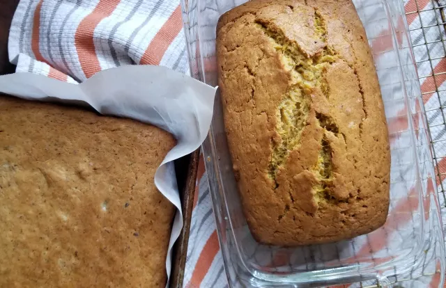
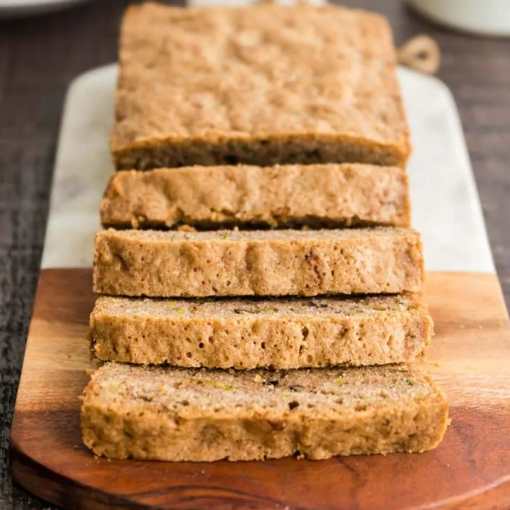

A to Z Bread
A fruit bread recipe where you can use any fruit!
Ready In:
1hr 20mins
Serves:
16
INGREDIENTS
3 c. flour
1 t. salt
1 t. baking soda
2 t. cinnamon (optional)
½ t. nutmeg (optional)
½ t. Baking powder
3 eggs
1c. oil
2 c. sugar
2 c. A to Z*
3 t. vanilla
1 c. nuts, chopped
DIRECTIONS
Sift dry ingredients; set aside.
Beat eggs in large bowl; add oil and sugar. Cream well.
Add A to Z and vanilla. Add dry ingredients. Mix well. Add nuts.
Spoon into 2 well-greased loaf pans. Bake in a preheated oven at 325o F for 1 hour.
Makes 2 large loaves.
*A to Z - use one of the following, or a mixture of the following, equal to 2 cups except as indicated:
Apples, grated
Applesauce
Apricots, chopped
Bananas, mashed
Carrots, grate
Cherries, pitted and chopped
Coconut (fresh), grated
Dates, pitted and finely chopped
Eggplant, ground up
Figs, finely chopped
Grapes (seedless)
Honey (omit sugar above)
Lemons (use only ½ c. juice)
Marmalade (omit 1 c. sugar)
Oranges, chopped
Peaches (fresh or canned), chopped
Pepperminut (use only ½ c.)
Pear, chopped
Pineapple (crushed), well drained
Prunes, chopped (use only 1 c.)
Pumpkins (canned)
Raisins
Raspberries
Rhubarb, finely chopped
Strawberries (fresh or well drained frozen)
Sweet potato, grated coarsely
Tapioca, cooked
Tomatoes (use only ½ c. sugar)
Yams, cooked and mashed
Yogurt (plain or flavored)
Zucchini, ground or grated, well drained


On Allrecipes I like the use of checkboxes beside the ingredients. I think it offers a nice little interaction. I also like how quickly you see the reviews on the recipes, immediately you know if the recipe is a hit or not. There are some arrangement things i find awkward, for example on this blueberry muffin recipe the video of the top jumps to the bottom right corner when you scroll and, while I like the idea, the pacement feels awkward and out of place - especially when it interacts with things already on the sidebar.
Simply Recipes , I think the landing page for Simply Recipes is really effective. A nice spotlight recipe with similar dishes scrolling to the left really builds an appetite and makes for alluring calls to action. Then how the categories are laid out after that is really effective as well.
I like how modern Bon Appetit's pages are. The simple black and white complemented by the images makes a sharp apperence. I do wish the header bar wasn't so pronounced when you're looking at the actual recipe.
I think the way Home Societe handles their content is really interesting. There's many different elements that they needed to communicate and the layout that they have now works well to make consuming the information not overwhelming. I also like the side scroll, thats always fun
The Ocean Agency's website has a very clear breakdown of information that needs to be communicated. The clear distinctions between sections and the clear nav elements makes this site both beautiful and easy to navigate.
I like how Skyline Films' website almost forces the viewer to interact with all of the content on the site with auto redirects with almost seamless transitions.